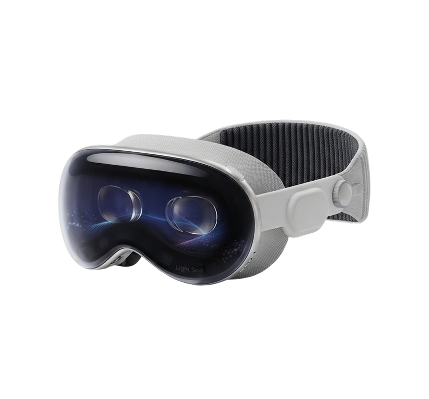

Stamped! — A City Passport
A SwiftUI iOS app for discovering and collecting 1,392 architectural landmarks across 140 cities. Fly through photoreal 3D cities, walk the streets in Look Around, follow day-by-day tours, and earn a passport stamp every time you complete a city.
The Problem
Travel and architecture apps are either too passive (a static list of landmarks) or too overwhelming (full trip planners with accounts and subscriptions). There's a gap for people who want a more structured, rewarding way to explore a city's built environment — something that tells you what to see, helps you get there, and gives you a reason to come back. The goal was an app that turns architectural sightseeing into a collection game: earn a stamp for every city you complete, and build a passport you're proud of.
See It Work
Recorded on iPhone in New York. Tap a pin and the camera swoops down to it over Apple's 3D city scans, then drop to street level in Look Around.
What's New in 2.3
Version 2.3, now in App Store review, turns the city map into the center of the app.
Photoreal 3D city map
Satellite imagery draped over Apple's 3D city models, with a tilted camera so the buildings stand up, a compass, and a 2D/3D toggle.
Tap a pin to fly there
Tapping a landmark swoops the camera down to it before opening its card, so you see the building in 3D first.
City Explore & ambient audio
New City Explore views with ambient city sound, plus a sheet that nudges you to scan buildings you visit.
AR mode, fixed
AR now turns on the camera reliably, explains when a city has no 3D model yet, and lets you tap buildings and scans.
Coming in 2.4
Built and in testing, not on the App Store yet.
Want to Visit
Heart any landmark, or search Apple Maps for any restaurant, shop, or venue and save it. Saved places get their own pins and sync through iCloud.
Guided city tour
One button flies between every landmark in walking order, starting nearest to you, pausing on each so you can read its card.
Map card quick actions
Stamp, Want to Go, and Look Around right on the map card, arrows to step through landmarks, and in-app websites and Ticketmaster events on place cards.
Filters & map styles
Show not visited, stamped, or Want to Visit, narrow by architectural style, a pulsing pin on the nearest unvisited landmark, and a map/satellite toggle.
App Store Screenshots

Photoreal 3D map

Your journey so far

Look Around street view

Apple Intelligence itinerary

Architecture quiz
More Screens

Onboarding

Look Around in Detroit

City stamp earned

City detail + quiz

Live landmark map

Travel dossier

Weather, events & dining

Curated daily itinerary

Search by architect
How It Works
The app organizes the world into continents → countries → cities. A world progress card on the home screen shows how many of the 140 cities you've mastered and your percentage toward completing all of them. Tapping into a city shows a detail page with your progress percentage, a rank badge (like "Urban Insider"), a per-city architecture quiz, and the full landmark list.
Each city has a curated day-by-day architectural itinerary — a timeline of stops with walking times between them, organized chronologically by year built. On the 3D city map, orange pins mark stamped landmarks and grey pins mark the ones you haven't visited yet. When you visit every landmark in a city, a stamp celebration view fires and you earn a passport stamp with a "Did You Know?" fact about the city.
Beyond the architecture, each city surfaces a live travel dossier (local language, airport, transit, currency) alongside real-time weather and a 7-day forecast from Open-Meteo, upcoming events filtered by category from Ticketmaster, and nearby dining from Apple Maps — so you can plan the rest of your day without leaving the app.
Also in the App
Stamps, visit dates, and notes follow you across your devices through iCloud, with no account to create.
Search across all 140 cities by city name, landmark name, or architect — results appear instantly.
Per-city 10-question quiz to test your knowledge of the buildings before and after you explore.
The travel dossier says hello in the local language, alongside the airport code, transit options, and currency.
Attach a personal photo to any landmark using the camera or photo library, saved locally to your passport entry.
High-contrast mode, reduce motion, and VoiceOver labels throughout.
Architecture
Stamped! is a pure SwiftUI app. The landmark and city content layer is embedded in code — BuildingRegistry maps each City to its landmark list, and CityData holds metadata like nicknames, airport codes, and local transit. This keeps the app fully functional offline for browsing, tracking, and navigation, with the live data layer (weather, events, dining) layered on top where a connection is available.
The 3D map is SwiftUI's Map with .mapStyle(.imagery(elevation: .realistic)). The 3D effect comes from the camera: every move sets a MapCamera pitched 60–65°, because a camera looking straight down turns the same data into a flat satellite photo.
The guided tour coming in 2.4 is a single cancellable Task that orders the filtered landmarks by nearest-neighbor walking distance from you (or the city center), flies to each one, and waits on it. Tapping a pin, using the landmark card, or leaving the screen cancels the task, so the tour never fights the user for the camera.
State flows through a central GlobalProgressManager — an ObservableObject singleton that owns all visited IDs and user-attached photos. Visited IDs, visit dates, and notes are written to both UserDefaults and NSUbiquitousKeyValueStore, so they sync through iCloud with no backend and no account (in 2.4 the wishlist and saved places sync the same way); photos are written as BuildingID.jpg files in the app's Documents directory and loaded back on startup. City rank and completion percentage are computed properties derived from the visited set, so they're always in sync without separate storage.
Settings like haptics, sound, high contrast, and reduced motion each live in @AppStorage — one line of persistence per toggle. The view hierarchy follows natural SwiftUI nesting: CityListView → CityDetailView → building detail and itinerary views, with PassportGalleryView accessible from a floating passport button throughout.
What Was Hard
The biggest design challenge was scope management. A travel app can expand infinitely — more cities, more data sources, more features. The answer was a strict rule: every screen had to serve the core loop (browse → visit → stamp). Weather, events, and dining made the cut because they answer "what do I do now that I'm here." Look Around made the cut because it answers "what does this building actually look like." Anything that didn't support one of those questions got cut.
Wiring MapKit pins to local progress state was subtler than expected. The map needs to reflect stamp state in real time as the user marks buildings visited — without re-fetching or re-rendering the whole annotation set. The solution was observing GlobalProgressManager directly in the map view so annotations update as @Published state changes, rather than passing a static snapshot.
The fly-to camera took a few passes. Centering the camera on a landmark put the building right under the card that slides up from the bottom of the screen. The fix was aiming the camera slightly south of the landmark, which pushes the building up into the visible part of the map. Framing a whole city had a similar problem: one far-out landmark, like JFK airport in New York, made the map open zoomed out too far. The fix in 2.4 frames the closest 80% of landmarks and ignores the outliers.
The Ticketmaster integration required careful category filtering and graceful degradation — some cities have no upcoming events, and the UI had to handle empty states cleanly without making the screen feel broken. Same for Look Around: not every location has street-level imagery, so the app falls back to a standard map tile rather than showing a broken state.
App Store approval took multiple rounds. Apple scrutinized the camera usage string, the Ticketmaster deep links (which had to open in Safari rather than in-app to comply with guidelines), and the location permissions flow. Getting all three right simultaneously was the final hurdle before the app shipped.
Where the Idea Could Go
A group of MSU students visited the Apple Developer Academy while I was there. I showed them Stamped! and walked them through how it worked — the city loop, the stamp collection, the itineraries. One of them said something like "this would be perfect for learning your way around campus as a freshman." That stuck.
The concept maps directly: cities become campus zones, landmarks become dining halls and student services buildings, stamps become orientation completion badges. I wrote it up and built out a pitch doc and HTML deck, but it's still just an idea — nothing in development. I documented it because the feedback was real and the framework already fits, not because there's a product coming.
Stamped! for Apple Vision Pro
A visionOS version planned for 2.4, with all 140 cities on the same photoreal 3D city map, landmark cards, and the passport stamps you've already earned on iPhone, synced through iCloud. Part of my work at the Apple Developer Academy.

The Outcome
Stamped! started in February 2026 as my Swift Student Challenge entry and became the first app I took from zero to the App Store on my own. I didn't stop at launch: it has gone through seven versions in eight months, from 1.0 to 2.3, adding achievements, a world map, passport sharing, and building scans that sync through iCloud. 2.3, now in App Store review, adds the photoreal 3D city map, and 2.4 is built and in testing.
The patterns I worked out here (one observable store for shared state, computed values instead of duplicate storage, and a clean split between content, state, and UI) are the ones I've used in every app since, including Tally.